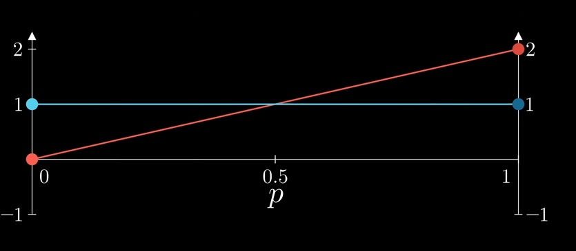
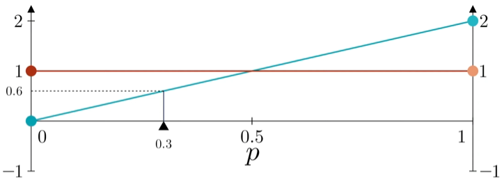
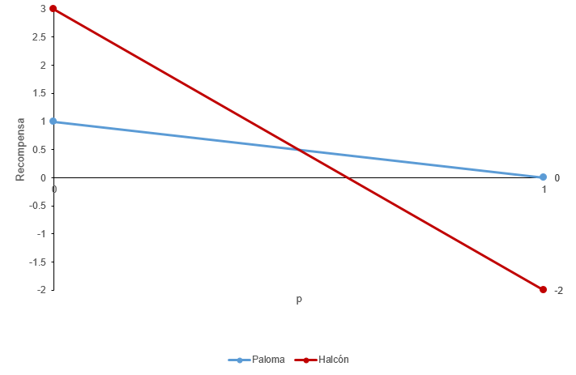

3 Capítulo 3: Teoría de Juegos Evolutiva
La teoría de juegos evolutiva (o EGT, de “Evolutionary game theory”) es una rama de la teoría de juegos que aplica principios de biología evolutiva para estudiar las interacciones estratégicas entre individuos de una población. Su objetivo es comprender cómo evolucionan los comportamientos y las estrategias sociales con el tiempo a través del proceso de selección natural. En la teoría de juegos tradicional, los jugadores toman decisiones en función de su racionalidad. En la teoría de juegos evolutiva, los individuos son vistos como entidades biológicas con rasgos hereditarios; hay muchos jugadores en el juego que ejecutan estrategias programadas en sus genes e interactúan entre sí, y se reproducen según su aptitud, o “fitness”. Lo que en teoría de juegos es una “recompensa”, en EGT es la reproducción.
Recordemos el juego del Ciervo y la Liebre (Stag Hunt) que vimos, pero ahora desde un enfoque desde la perspectiva evolutiva en vez desde algo netamente de la teoría de juegos.
Llamemos “\(p\)” a la proporción de cazadores que utilizan la estrategia Ciervo (\(\sigma_A\)) dentro de la población. \(p\) va a variar entre 0 y 1. La línea roja en la Figura 3.1 representa la recompensa de la estategia Liebre, mientras que la línea azul representa la recompensa de la estrategia Ciervo.
Para esta matriz de pagos:
| Ciervo (C) | Liebre (L) | |
|---|---|---|
| Ciervo (C) | (2, 2) | (0, 1) |
| Liebre (L) | (1, 0) | (1, 1) |
Según la matriz de pagos (ver capítulo anterior), cuando “\(p = 1\)” (la proporción de cazadores que usa la estrategia Ciervo es del 100%), la recompensa de la estrategia Ciervo es 2, mientras que la recompensa de la estrategia de la liebre es 1. Cuando la proporción de cazadores que usa la estrategia Ciervo es 0% (“\(p = 0\)”), la recompensa de la estrategia Ciervo es 0, mientras que la estrategia Liebre es 1.

Otro ejemplo, ¿qué sucede si \(p = 0.3\)? Esto significa que el cazador A interactúa aleatoriamente con otros cazadores, de los cuales un 30% usan la estrategia Ciervo y un 70% la estrategia Liebre. Si el cazador A utiliza la estrategia Ciervo, el resultado esperado sería la recompensa (eje Y) del gráfico en \(p = 0.3\).
\(0.3 * \pi_A(Ciervo,Ciervo) + 0.7 * \pi_(Ciervo,Liebre) = 0.3 * 2 + 0.7 * 0 = 0.6\)

También podemos el mismo resultado (0.6) calculandolo como si fuera una estrategia mixta.
\[\begin{align*} \\u_A(h_{ciervo}, \sigma_B) = \sigma_A,_{ciervo}[\sigma_B,_{ciervo}\pi_A(Ciervo,Ciervo) + \sigma_B,_{liebre}\pi_A(Ciervo,Liebre)] + \\ \sigma_A,_{liebre}[\sigma_B,_{ciervo}\pi_A(Liebre,Ciervo) + \sigma_B,_{liebre}\pi_A(Liebre,Liebre)] \\ = \sigma_B,{ciervo} *2 + (1 - \sigma_B,_{ciervo}) * 0 = 0.3 * 2 \\ = 0.6 \end{align*}\]
Esta aproximación nos sirve para buscar las Estrategias Evolutivamente Estables.
3.1 Estrategias Evolutivamente Estables (ESS)
Los juegos evolutivos extienden la Teoría de Juegos considerando poblaciones de individuos y cómo las estrategias evolucionan en el tiempo, ajustándose a las dinámicas selectivas del entorno. Una Estrategia Evolutivamente Estable (ESS) es una estrategia que, una vez predominante en una población, no puede ser invadida por estrategias alternativas debido a que estas no confieren ventajas competitivas en el contexto de la población actual.
Formalmente, una estrategia \(s^*\) es una Estrategia Evolutivamente Estable (ESS) si:
\[u(s^*, s^*) > u(s, s^*), \forall s \neq s^*\] O si:
\[u(s^*, s^*) = u(s, s^*)\], entonces \[u(s^*, s) > u(s, s)\]
En el ejemplo de Ciervo/Liebre que venimos utilizando, en un mundo lleno de cazadores con estrategia Ciervo (\(p = 1\)) si el 1% de la población de repente cambia su estrategia a Liebre por resultado de alguna una mutación (\(p = 0.99\)), la recompensa por la estrategia Ciervo (el punto rojo en la derecha de la Figura 3.1) baja levemente desde 2, pero sigue siendo mayor a la recompensa por usar la estrategia Liebre (1). Por lo que la estrategia Liebre se extingue luego de poco tiempo (o pocas generaciones, en el contexto de EGT).
Por otro contrario, si en un mundo lleno de cazadores que utilizan la estrategia Liebre (\(p=0\)), el 1% de la población cambia a la estrategia Ciervo (\(p=0.01\)), la estrategia Ciervo no puede sobrevivir a lo largo de generaciones. Para decirlo de manera más sencilla: si todos a tu alrededor están cazando sólo ciervos, también es rentable cazar ciervos; y sería una tontería cazar ciervos solo si todos a tu alrededor están cazando liebres.
Por lo tanto, cazar ciervos y cazar liebres son EES, son resistentes a la aprición de una estrategia alternativa.
Los Estados Evolutivamente Estables se refieren a las condiciones de estabilidad a la que llegan las poblaciones durante su evolución. Comparte similitudes con el equilibrio de Nash en modelos de estrategias mixtas.
Volviendo a los cazadores, si la mitad de ellos caza liebres y la otra mitad ciervos (\(p=0.5\)), la mitad que caza liebres recibirá igualmente una recompensa de 1. Al interactuar aleatoriamente con los demás, los individuos que utilizan la estrategia Ciervo recibirán una recompensa de 2 en la mitad de los casos y un pago de 0 en la otra mitad, lo que da como resultado un pago promedio de 1.
En la teoría de juegos evolutivos, la recompensa se considera como aptitud o fitness, que determina el éxito reproductivo de la siguiente generación. Por tanto, si se produce un número igual de crías, el estado de \(p=0.5\) permanece inalterado y se convierte en un equilibrio.
3.1.1 Ejemplo clásico: El juego Halcón/Paloma (Hawk/Dove game)
Un ejemplo clásico de ESS es el juego Halcón/Paloma, un balance entre “halcones” y “palomas” en teorías de lucha por recursos. En este modelo, los “halcones” son agresivos y siempre luchan por el recurso, mientras que las “palomas” son pasivas y prefieren evitar conflictos. La matriz de pagos de este juego se puede representar de la siguiente manera:
| Halcón | Paloma | |
|---|---|---|
| Halcón | (-2, -2) | (3, 0) |
| Paloma | (0, 3) | (1, 1) |
En esta matriz, si dos halcones se encuentran, ambos incurren en un costo elevado debido al conflicto (por ejemplo, heridas o pérdida de energía), obteniendo un pago de -2 cada uno. Si un halcón se encuentra con una paloma, el halcón obtiene el recurso sin lucha (3) mientras que la paloma no obtiene nada (0). Cuando dos palomas se encuentran, comparten el recurso de manera equitativa, obteniendo un pago moderado (1 cada una).
Si usamos \(p\) para identificar la proporción de halcones, la recompensa de la estrategia Paloma es alta cuando \(p = 1\), porque todos los halcones están peleando y lastimándose entre sí (su recompensa es -2). Entonces, al no involucrarse en las peleas, la estrategia Paloma puede invadir a la estrategia Halcón. Por otro lado, cuando la proporción de palomas es alta (\(p=0\)), el halcón invade fácilmente porque explota a las palomas (su recompensa es 3).
El juego Halcón/Paloma no tiene una Estrategia Evolutivamente Estable, pero si tiene un Estado Evolutivamente Estable. El equilibrio en este sistema ocurre cuando la proporción de halcones y palomas en la población se estabiliza de manera que ninguna estrategia puede invadir a la otra.

Esto refleja un balance evolutivo, donde los costos de la agresión y los beneficios de evitar el conflicto se equilibran. La frecuencia exacta de halcones y palomas en el equilibrio dependerá de los valores específicos de los costos y beneficios en el sistema particular.
3.1.1.1 Dinámica del juego Halcón/Paloma
Consideremos una población donde las estrategias están distribuidas de acuerdo con sus frecuencias \(p_H\) (halcones) y \(p_P\) (palomas).
La dinámica de las frecuencias alélicas puede representarse mediante el modelo replicador que vimos en el Capítulo 2:
\[ \frac{dp_H}{dt} = p_H \left( f_H - \bar{f} \right), \quad \frac{dp_P}{dt} = p_P \left( f_P - \bar{f} \right), \]
donde: - \(f_H\) y \(f_P\) son las aptitudes medias de los halcones y palomas, respectivamente. - \(\bar{f}\) es la aptitud media de la población, calculada como: \[ \bar{f} = p_H f_H + p_P f_P. \]
Utilizando la matriz de pagos para halcones y palomas anterior, las aptitudes medias se calcularían como: \[ f_H = p_H (-2) + p_P (3), \quad f_P = p_H (0) + p_P (1). \]
Al resolver este sistema, se obtiene el equilibrio dinámico donde
\[\frac{dp_H}{dt} = \frac{dp_P}{dt} = 0\]
3.2 Dinámicas Evolutivas y Frecuencias Alélicas
Cuando las estrategias de “halcones” y “palomas” tienen una base genética, estas pueden interpretarse directamente en términos de frecuencias alélicas en una población. En este caso, las proporciones de individuos que exhiben cada fenotipo evolucionan de acuerdo con los éxitos reproductivos relativos de cada estrategia. Los alelos asociados a estrategias que confieren mayor éxito reproductivo bajo las condiciones ambientales actuales tienden a aumentar en frecuencia, mientras que aquellos menos exitosos disminuyen.
Por ejemplo, supongamos que los halcones inicialmente tienen una ventaja significativa debido a la abundancia de recursos y la escasez de conflictos. En este escenario, los alelos que codifican el comportamiento agresivo se propagan rápidamente en la población. Sin embargo, a medida que aumenta la proporción de halcones, también crecen los costos asociados a los enfrentamientos (heridas, pérdida de energía, o incluso la muerte). Esto introduce una presión selectiva que favorece a las palomas, ya que estas evitan los costos del conflicto y pueden reproducirse con mayor éxito en un ambiente dominado por halcones.
Este proceso de retroalimentación negativa lleva a un equilibrio dinámico, en el cual las frecuencias alélicas que codifican para cada estrategia se estabilizan. El punto de equilibrio refleja un balance donde los beneficios y costos relativos de cada estrategia se compensan mutuamente. Por ejemplo, si los costos de los enfrentamientos son extremadamente altos, la proporción de halcones disminuirá hasta que las palomas dominen el sistema. Por el contrario, si los recursos son limitados y las palomas no logran acceder a suficientes recursos debido a su pasividad, los halcones tendrán mayor éxito.
Este enfoque conecta directamente la dinámica evolutiva con la estabilidad estratégica descrita por la teoría de juegos. En última instancia, la evolución de las frecuencias alélicas no solo refleja los equilibrios teóricos, sino también la adaptación de las poblaciones a las condiciones ecológicas cambiantes y las interacciones competitivas en el tiempo.
3.2.1 Ejemplo en Ecología: Dinámica de Dos Especies
Un ejemplo ecológico relevante de estas dinámicas puede observarse en la interacción entre dos especies que compiten por un recurso compartido. Supongamos que tenemos dos especies con estrategias diferenciadas: una agresiva (similar a “halcones”) y otra más pasiva (similar a “palomas”). Estas especies compiten en un entorno donde los beneficios y costos de cada estrategia dependen de las proporciones relativas de ambas en la población.
La matriz de pago que utilizaremos para este ejemplo es la siguiente.
| Halcón | Paloma | |
|---|---|---|
| Halcón | (-2, -2) | (3, 0) |
| Paloma | (0, 3) | (1, 1) |
Recordemos del Capítulo 2 que en esta matriz los valores representan las recompensas o costos obtenidos por las especies en función de sus interacciones. Por ejemplo, si dos “halcones” se encuentran, ambos incurren en un alto costo (-2) debido a la agresión mutua. Si un “halcón” interactúa con una “paloma”, el halcón obtiene todo el recurso (3), mientras que la paloma no obtiene nada (0). Cuando dos “palomas” interactúan, comparten el recurso equitativamente (1, 1).
Veamos un modelo en R que permite simular cómo varían las frecuencias y el fitness relativo de estas dos especies a lo largo del tiempo según diferentes configuraciones de la matriz de pago:
# Definir matriz de pagos
# a = encuentro de dos halcones (se agreden)
# b = encuentro de un halcón con una paloma (obtiene todo el halcón)
# c = encuentro de una paloma con un halcón (la paloma no obtiene nada)
# d = encuentro entre dos palomas (se reparten equitativamente el recurso)
a <- -2
b <- 3
c <- 0
d <- 1
payoff_matrix <- matrix(c(a, b, c, d), nrow = 2, byrow = TRUE,
dimnames = list(c("Halcón", "Paloma"), c("Halcón", "Paloma")))
# Inicializar parámetros
frequencies <- c(halcon = 0.2, paloma = 0.8) # Frecuencias iniciales. Hay una mayor cantidad de palomas
num_generations <- 100
results <- data.frame(generation = 1:num_generations, halcon = NA, paloma = NA)
# Simular dinámica replicadora
for (gen in 1:num_generations) {
W_halcon <- frequencies["halcon"] * payoff_matrix[1, 1] + frequencies["paloma"] * payoff_matrix[1, 2]
W_paloma <- frequencies["halcon"] * payoff_matrix[2, 1] + frequencies["paloma"] * payoff_matrix[2, 2]
W_avg <- frequencies["halcon"] * W_halcon + frequencies["paloma"] * W_paloma
frequencies["halcon"] <- frequencies["halcon"] * (W_halcon / W_avg)
frequencies["paloma"] <- frequencies["paloma"] * (W_paloma / W_avg)
results[gen, ] <- c(gen, frequencies["halcon"], frequencies["paloma"])
}
# Visualizar resultados
library(ggplot2)
ggplot(results, aes(x = generation)) +
geom_line(aes(y = halcon, color = "Halcón")) +
geom_line(aes(y = paloma, color = "Paloma")) +
labs(title = "Dinámica Replicadora de Dos Especies",
y = "Frecuencia", x = "Generación", color = "Estrategia") +
theme_minimal()
Con estas condiciones inciales, el resultado es similar a un gráfico de competencia interespecífica. Prueba cambiar la matriz de pago a: a = 3, b = 5, c = 5,d = 3
¿Como es la interacción entre especies ahora? ¿de competencia?
Dependiendo de la matriz de pago y las condiciones iniciales, las frecuencias de ambas estrategias (especies) evolucionan hacia un equilibrio dinámico o uno de los fenotipos domina. Puedes modificar la matriz de pago para explorar diferentes escenarios y su impacto en las dinámicas evolutivas.
La teoría de juegos evolutiva no solo es un marco teórico, también encuentra validación en casos empíricos bien documentados.
Algunos ejemplos destacados:
Aves territoriales (Peterson, 1977; Davies, 1982):
En muchas especies de aves canoras, los machos pueden adoptar tácticas alternativas: mantener y defender un territorio de canto (estrategia “halcón”) o actuar como flotantes que intentan aparearse sin defender un área fija (estrategia “paloma”). La coexistencia de ambas estrategias puede explicarse por un equilibrio mixto estable.Libélulas (Libellula luctuosa):
Gross & Alcock (1980) documentaron cómo los machos pueden exhibir tácticas alternativas: algunos defienden perchas y compiten agresivamente por hembras, mientras que otros se reproducen mediante incursiones rápidas. Al igual que en los salmones Coho (ejemplo del capítulo 2), estas tácticas corresponden a estrategias evolutivamente estables que se mantienen en la población.
Estos casos muestran cómo la teoría predice la coexistencia de múltiples comportamientos cuando los beneficios y costos dependen de la frecuencia relativa de cada estrategia en la población.
3.3 Discusión
3.3.1 A. ¿Qué desigualdades son necesarias para que la cooperación sea un Equilibrio de Nash?
Para que la cooperación sea un Equilibrio de Nash, los pagos asociados deben cumplir con ciertas desigualdades. Supongamos un juego de dos jugadores con estrategias de cooperar (C) o traicionar (T), y los pagos \(P(x, y)\) representan el resultado para un jugador que elige \(x\) mientras el otro elige \(y\). La cooperación será un Equilibrio de Nash si se cumplen las siguientes condiciones:
\[ P(C, C) \geq P(T, C), \]
donde \(P(C, C)\) es el pago recibido cuando ambos cooperan, y \(P(T, C)\) es el pago cuando un jugador traiciona mientras el otro coopera. Además, para garantizar que ningún jugador prefiera traicionar cuando ambos cooperan:
\[ P(C, C) \geq P(T, T). \]
Estas desigualdades garantizan que ningún jugador tenga incentivos para desviarse unilateralmente hacia la traición si el otro jugador está cooperando.
Una matriz de pago del Dilema del Prisionero que cumple con las condiciones necesarias para que la cooperación sea un Equilibrio de Nash podría ser:
| Cooperar (C) | Traicionar (T) | |
|---|---|---|
| Cooperar (C) | (3, 3) | (1, 2) |
| Traicionar (T) | (2, 1) | (2, 2) |
3.3.1.1 Verificación de las Condiciones:
- Si el jugador 2 coopera (\(C\)):
- Pago para el jugador 1 al cooperar: \(P(C, C) = 3\).
- Pago para el jugador 1 al traicionar: \(P(T, C) = 2\).
- Como \(P(C, C) > P(T, C)\), no hay incentivo para traicionar.
- Si el jugador 2 traiciona (\(T\)):
- Pago para el jugador 1 al cooperar: \(P(C, T) = 1\).
- Pago para el jugador 1 al traicionar: \(P(T, T) = 2\).
- Como \(P(T, T) > P(C, T)\), traicionar sigue siendo la mejor respuesta cuando el otro traiciona.
Esta matriz cumple con las condiciones necesarias para que la cooperación sea un Equilibrio de Nash en el Dilema del Prisionero.
3.3.2 ¿Qué factores no incluidos podrían promover la cooperación?
El modelo clásico del Equilibrio de Nash no considera dinámicas adicionales que podrían promover la cooperación en contextos reales. Algunos factores relevantes que podrían ser incluidos son:
- Interacciones repetidas: La posibilidad de que los jugadores interactúen múltiples veces en el futuro puede incentivar la cooperación a través de la reciprocidad.
- Selección por parentesco: En ecología, los individuos a menudo cooperan con parientes cercanos para aumentar su éxito reproductivo combinado, conocido como fitness inclusivo.
- Efectos de reputación: En sistemas con múltiples interacciones sociales, los individuos que cooperan consistentemente pueden ganar una mejor reputación, lo que les otorga ventajas a largo plazo.
- Presión ambiental compartida: Factores externos como la amenaza de un depredador común o recursos limitados pueden alentar a las especies a colaborar en lugar de competir.
Estos factores no incluidos en el modelo simple pueden alterar significativamente las dinámicas y promover la cooperación en escenarios donde la teoría predice no-cooperación.
3.4 ¿Quieres leer mas?
- Davies, N. B. (1982). Territorial defence in the speckled wood butterfly (Pararge aegeria): the resident always wins. Animal Behaviour, 30(3), 510–518.
- Hofbauer, J., & Sigmund, K. (1998). Evolutionary Games and Population Dynamics. Cambridge University Press.
- Maynard Smith, J. (1982). Evolution and the Theory of Games. Cambridge University Press.
- McNamara, J. M., & Leimar, O. (2020). Game Theory in Biology: Concepts and Frontiers. Oxford University Press.